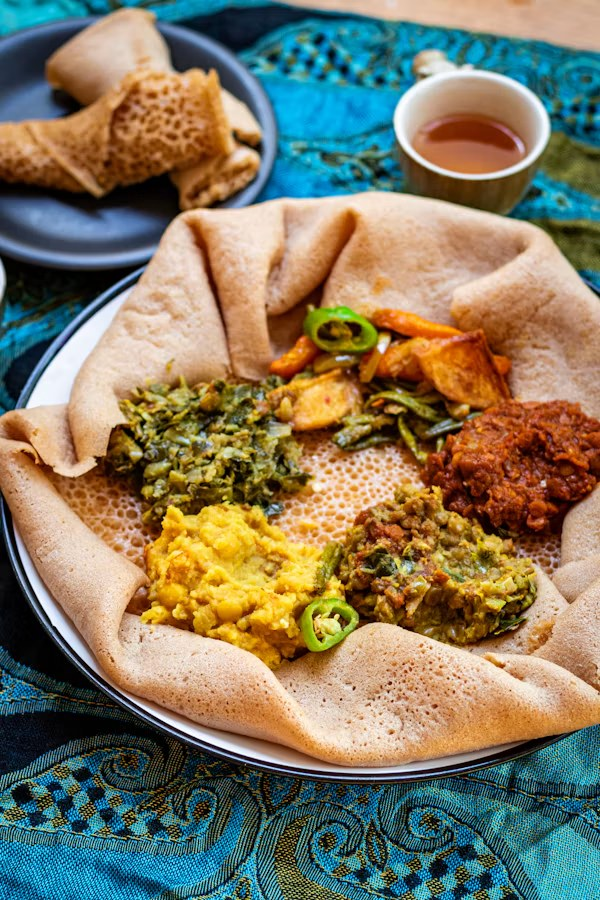
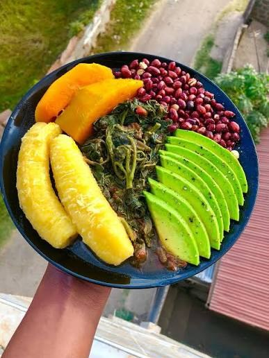
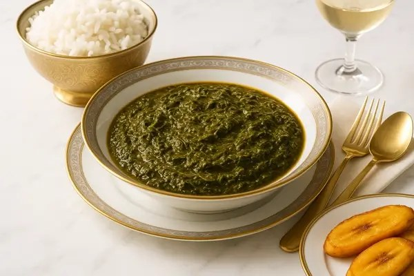

Ethiopia · East Africa
Injera
Spongy, sour teff flatbread that doubles as plate and spoon for Ethiopian stews.
Explore by region
From the Ethiopian highlands to the Swahili coast: fermented teff, fragrant spice islands and stews scooped up by hand.

Food culture
East Africa brings together very different kitchens. In Ethiopia and Eritrea, meals are served on injera and spiced with berbere, a red blend of chili, fenugreek, ginger and other spices. Around the Great Lakes, in Rwanda, Uganda and Burundi, cooking centers on beans, plantains and cassava leaves.
On the Swahili coast and the island of Zanzibar, centuries of Indian Ocean trade with Arabia and India brought cloves, cardamom and cinnamon into dishes like pilau rice. Zanzibar and Pemba are still known as the Spice Islands.
Eating together from one platter is central. In Ethiopia, feeding someone by hand, called gursha, shows respect and affection, and coffee is roasted and brewed in a ceremony for guests.
Staples
The tiny Ethiopian grain fermented into injera; naturally gluten-free.
Cooked into ugali, the firm porridge eaten across Kenya and Tanzania.
Pounded and simmered into isombe in Rwanda and sombe in Burundi.
Green cooking bananas, steamed and mashed, a staple in Uganda.
Eaten almost every day in Rwanda, Burundi and Uganda.
Grown on Zanzibar and Pemba and traded around the Indian Ocean.
Cooking techniques
Watch
Al Jazeera's Street Food series visits Zanzibar to show how centuries of Indian Ocean trade shaped what the island eats today.
Example dishes

Ethiopia · East Africa
Spongy, sour teff flatbread that doubles as plate and spoon for Ethiopian stews.

Rwanda · East Africa
Pounded cassava leaves simmered with peanut paste, eggplant and palm oil.